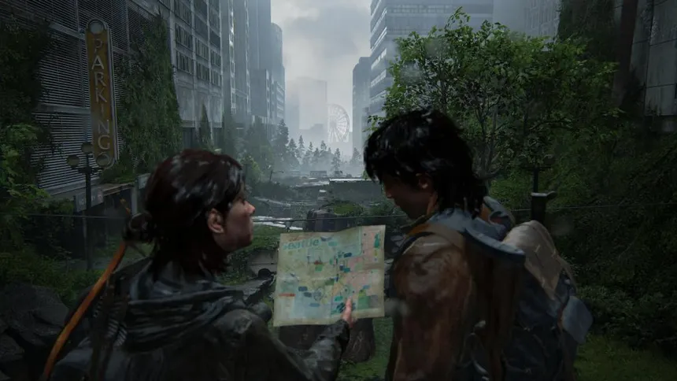
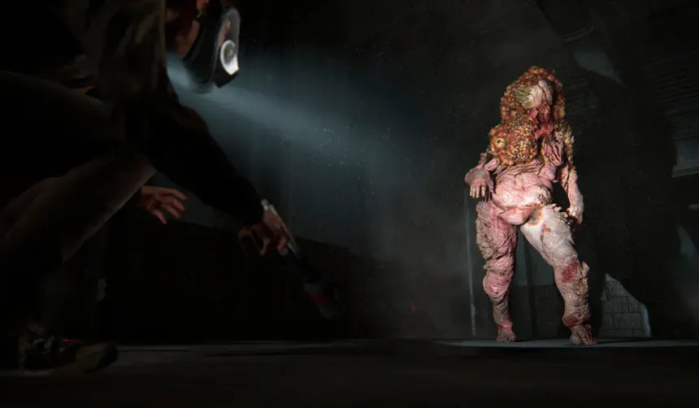

Cidades abandonadas
Construções destruídas e tomadas pela natureza fazem parte do mundo de The Last of Us.
Sobrevivência, esperança e o preço das escolhas.
Esta página não revela viradas da trama.
Vinte anos após uma pandemia devastar a humanidade, Joel é encarregado de acompanhar Ellie através de um mundo marcado por ruínas, perigos e sobreviventes.
Durante a jornada, os dois enfrentam diferentes situações enquanto desenvolvem uma relação importante para a história.

Cada recurso conta e cada encontro pode custar caro.
O pior perigo nem sempre é o infectado.
O que as pessoas fazem para seguir em frente.
Toda escolha deixa marcas em quem fica.
Construções destruídas e tomadas pela natureza fazem parte do mundo de The Last of Us.

Os infectados são uma das principais ameaças encontradas durante a jornada.
Um fungo toma o corpo e a ameaça cresce a cada estágio.
Infecção recente. São rápidos e agressivos.
O fungo avança e eles passam a atacar de surpresa.
Perdem a visão e se guiam pelo som.
Estágio mais avançado: lentos e muito resistentes.